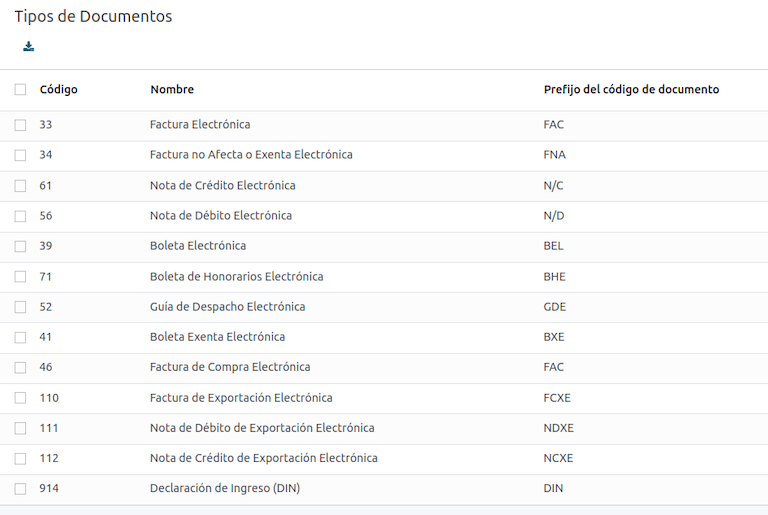
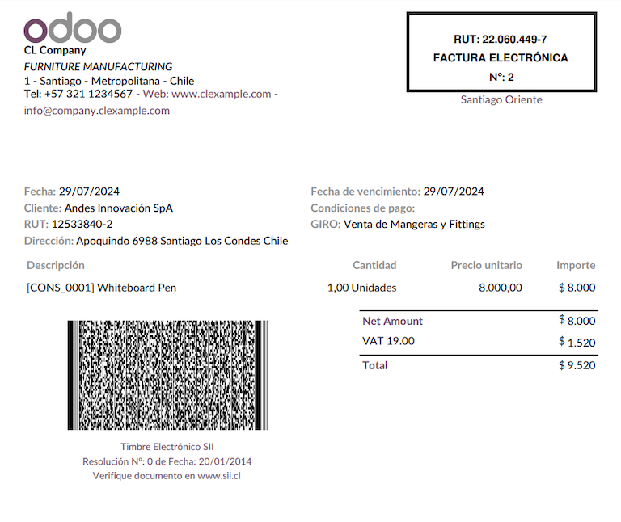
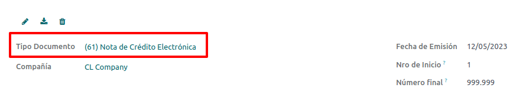
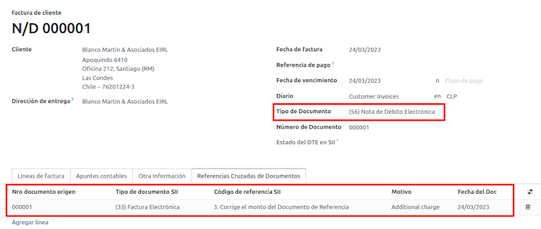
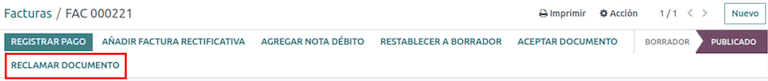
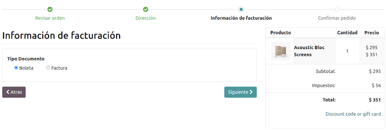
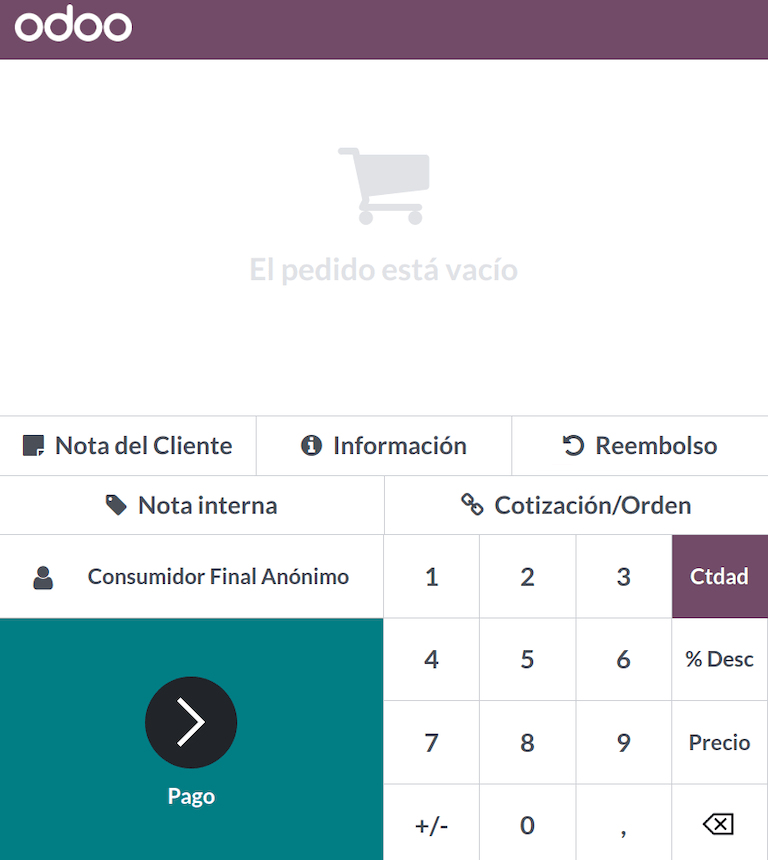

ประเทศชิลี¶
Tip
ชมบันทึกการสัมมนาผ่านเว็บทั้งสองรายการด้านล่างสำหรับการนำเสนอทั่วไปเกี่ยวกับการประยุกต์ใช้เป็นภาษาท้องถิ่น และค้นหาเพลย์ลิสต์เพื่อดูบทช่วยสอนเพื่อค้นหาขั้นตอนการทำงานที่ใช้งานได้จริงขณะใช้งาน Odoo ในประเทศชิลี
โมดูล¶
ติดตั้ง โมดูลต่อไปนี้เพื่อใช้ฟีเจอร์ทั้งหมดของการประยุกต์ใช้สำหรับประเทศชิลี
ชื่อ |
ชื่อทางเทคนิค |
คำอธิบาย |
|---|---|---|
ประเทศชิลี - ระบบบัญชี |
|
เพิ่มฟีเจอร์ระบบบัญชีขั้นต่ำที่จำเป็นสำหรับบริษัทในการดำเนินกิจการในประเทศชิลีภายใต้ข้อบังคับและแนวปฏิบัติ SII |
ประเทศชิลี - รายงานด้านบัญชี |
|
เพิ่มรายงาน Propuesta F29 และ Balance Tributario (8 คอลัมน์) |
ประเทศชิลี - ใบแจ้งหนี้อิเล็กทรอนิกส์ |
|
รวมข้อกำหนดด้านเทคนิคและการทำงานทั้งหมดเพื่อสร้างและรับใบแจ้งหนี้อิเล็กทรอนิกส์ออนไลน์โดยยึดตามกฎข้อบังคับ SII |
ประเทศชิลี - ใบเสร็จรับเงินอิเล็กทรอนิกส์ |
|
รวมข้อกำหนดด้านเทคนิคและการทำงานทั้งหมดเพื่อสร้างและรับใบแจ้งหนี้อิเล็กทรอนิกส์แบบดิจิทัลโดยยึดตามกฎข้อบังคับ SII |
การส่งออกสินค้าทางอิเล็กทรอนิกส์ไปยังประเทศชิลี |
|
รวมข้อกำหนดด้านเทคนิคและการทำงานเพื่อสร้างใบแจ้งหนี้อิเล็กทรอนิกส์สำหรับการส่งออกสินค้าตาม SII และระเบียบข้อบังคับด้านศุลกากร |
ประเทศชิลี - คู่มือการจัดส่งใบแจ้งหนี้อิเล็กทรอนิกส์ |
|
รวมข้อกำหนดด้านเทคนิคและการทำงานทั้งหมดเพื่อสร้างคู่มือการจัดส่งผ่านบริการเว็บตามกฎข้อบังคับ SII |
Note
Odoo จะติดตั้งแพ็คเกจที่เหมาะสมสำหรับบริษัทโดยอัตโนมัติตามประเทศที่เลือกในการสร้างฐานข้อมูล
โมดูล ประเทศชิลี - คู่มือการจัดส่งใบแจ้งหนี้อิเล็กทรอนิกส์ ขึ้นอยู่กับแอปพลิเคชัน สินค้าคงคลัง
Important
ฟีเจอร์ทั้งหมดจะพร้อมใช้งานเฉพาะในกรณีที่บริษัทผ่านกระบวนการรับรอง SII Sistema de Facturación de Mercado เรียบร้อยแล้ว
ข้อมูลบริษัท¶
ไปที่ และตรวจสอบให้แน่ใจว่าข้อมูลบริษัทต่อไปนี้เป็นข้อมูลล่าสุดและกรอกอย่างถูกต้อง:
ชื่อบริษัท
ที่อยู่:
ถนน
เมือง
รัฐ
รหัสไปรษณีย์
ประเทศ
รหัสภาษี: ป้อนหมายเลขประจำตัวของผู้ที่เลือก ประเภทผู้เสียภาษี
ชื่อกิจกรรม: เลือกรหัสกิจกรรมได้สูงสุดสี่รหัส
คำอธิบายกิจกรรมของบริษัท: ป้อนคำอธิบายสั้นๆ เกี่ยวกับกิจกรรมของบริษัท
การตั้งค่าระบบบัญชี¶
จากนั้น ไปที่ และทำตามคำแนะนำเพื่อกำหนดค่า:
ข้อมูลทางการเงิน¶
กำหนดค่าต่อไปนี้ ข้อมูลผู้เสียภาษี:
ประเภทผู้เสียภาษี โดยการเลือกประเภทผู้เสียภาษีที่ใช้:
VAT ที่ได้รับผลกระทบ (หมวดที่ 1): สำหรับใบแจ้งหนี้ที่เรียกเก็บภาษีจากลูกค้า
Fees Receipt Issuer (2nd Category): สำหรับซัพพลายเออร์ที่ออกใบเสร็จค่าธรรมเนียม (Boleta)
ผู้บริโภคปลายทาง: ออกใบเสร็จรับเงินเท่านั้น
ชาวต่างชาติ
สำนักงาน SII: เลือกสำนักงานภูมิภาคของบริษัทของคุณ :abbr:`SII (Servicio de Impuestos Internos)
ข้อมูลใบแจ้งหนี้อิเล็กทรอนิกส์¶
เลือกสภาพแวดล้อม SII Web Services ของคุณ:
SII - Test: สำหรับฐานข้อมูลทดสอบที่ใช้การทดสอบ CAFs ได้รับจาก SII ในโหมดนี้ สามารถทดสอบโฟลว์การเชื่อมต่อโดยตรงได้ โดยไฟล์จะถูกส่งไปยัง SII
SII - การใช้งานจริง: สำหรับฐานข้อมูลการใช้งานจริง
SII - โหมดสาธิต: ไฟล์ถูกสร้างขึ้นและยอมรับโดยอัตโนมัติในโหมดสาธิต แต่ ไม่ ถูกส่งไปยัง SII ด้วยเหตุนี้ ข้อผิดพลาดในการปฏิเสธหรือ ยอมรับโดยมีข้อโต้แย้ง จะไม่แสดงในโหมดนี้ การตรวจสอบภายในทั้งหมดสามารถทดสอบได้ในโหมดสาธิต หลีกเลี่ยงการเลือกตัวเลือกนี้ในฐานข้อมูลการผลิต
จากนั้น ป้อน ข้อมูลการออกใบแจ้งหนี้อิเล็กทรอนิกส์ทางกฎหมาย:
ความละเอียด N° SII
วันที่แก้ไข SII

เซิร์ฟเวอร์อีเมลขาเข้า DTE¶
สามารถกำหนด DTE กล่องอีเมลใบแจ้งหนี้อิเล็กทรอนิกส์ เพื่อรับอีเมลการเรียกร้องและการยอมรับของลูกค้า การเปิดใช้งานตัวเลือกนี้จาก เป็นสิ่งจำเป็นหากคุณต้องการใช้ กล่องอีเมลใบแจ้งหนี้อิเล็กทรอนิกส์ เป็น เซิร์ฟเวอร์อีเมล DTE ขาเข้า
Important
หากต้องการรับเอกสาร SII คุณจำเป็นต้องตั้งค่าเซิร์ฟเวอร์อีเมลของคุณเอง ข้อมูลเพิ่มเติมเกี่ยวกับวิธีการดำเนินการนี้สามารถดูได้ในเอกสารนี้: ../../general/email_communication
เริ่มต้นด้วยการคลิก กำหนดค่าอีเมลขาเข้า DTE จากนั้นคลิก สร้าง เพื่อเพิ่มเซิร์ฟเวอร์และกรอกข้อมูลในฟิลด์ต่อไปนี้:
ชื่อ: ตั้งชื่อเซิร์ฟเวอร์
ประเภทเซิร์ฟเวอร์: เลือกประเภทเซิร์ฟเวอร์ที่ใช้
เซิร์ฟเวอร์ IMAP
เซิร์ฟเวอร์ POP
เซิร์ฟเวอร์ท้องถิ่น: ใช้สคริปต์ท้องถิ่นเพื่อดึงอีเมลและสร้างบันทึกใหม่ สคริปต์สามารถพบได้ในส่วน การกำหนดค่า เมื่อเลือกตัวเลือกนี้
การตรวจสอบสิทธิ์ OAuth ของ Gmail: กำหนดให้ข้อมูลรับรอง Gmail API ของคุณได้รับการกำหนดค่าในการตั้งค่าทั่วไป ลิงก์โดยตรงไปยังการกำหนดค่าสามารถพบได้ในส่วน ข้อมูลการเข้าสู่ระบบ
เซิร์ฟเวอร์ DTE: เปิดใช้งานตัวเลือกนี้ เมื่อเลือกตัวเลือกนี้ บัญชีอีเมลนี้จะถูกใช้เพื่อรับใบแจ้งหนี้อิเล็กทรอนิกส์จากซัพพลายเออร์ และการสื่อสารจาก SII เกี่ยวกับใบแจ้งหนี้อิเล็กทรอนิกส์ที่ออก ในกรณีนี้ อีเมลนี้ควรตรงกับอีเมลทั้งสองที่ประกาศไว้ในไซต์ SII ในส่วน: ACTUALIZACION DE DATOS DEL CONTRIBUYENTE, Mail Contacto SII และ Mail Contacto Empresas
ในแท็บ เซิร์ฟเวอร์และการเข้าสู่ระบบ (สำหรับเซิร์ฟเวอร์ IMAP และ POP):
ชื่อเซิร์ฟเวอร์: ป้อนชื่อโฮสต์หรือ IP ของเซิร์ฟเวอร์
พอร์ต: ป้อนพอร์ตเซิร์ฟเวอร์
SSL/TLS: เปิดใช้งานตัวเลือกนี้หากการเชื่อมต่อถูกเข้ารหัสโดยใช้โปรโตคอล SSL/TLS
ชื่อผู้ใช้: กรอกชื่อผู้ใช้สำหรับเข้าสู่ระบบเซิร์ฟเวอร์
รหัสผ่าน: ป้อนรหัสผ่านเข้าสู่ระบบเซิร์ฟเวอร์

Tip
ก่อนที่จะเผยแพร่ ขอแนะนำให้เก็บถาวรหรือลบอีเมลทั้งหมดที่เกี่ยวข้องกับใบเรียกเก็บเงินของผู้ขายที่ไม่จำเป็นต้องดำเนินการใน Odoo ออกจากกล่องจดหมายของคุณ
ใบรับรอง¶
ต้องใช้ใบรับรองดิจิทัลในรูปแบบ .pfx เพื่อสร้างลายเซ็นใบแจ้งหนี้อิเล็กทรอนิกส์ หากต้องการเพิ่ม ให้คลิก กำหนดค่าใบรับรองลายเซ็น ใต้ส่วน ใบรับรองลายเซ็น จากนั้นคลิก สร้าง เพื่อกำหนดค่าใบรับรอง:
รหัสใบรับรอง: คลิก อัปโหลดไฟล์ของคุณ และเลือกไฟล์
.pfxรหัสผ่านใบรับรอง: กรอกข้อความรหัสผ่านของไฟล์
หมายเลขซีเรียลของเรื่อง: ขึ้นอยู่กับรูปแบบใบรับรอง ช่องอาจไม่ถูกเติมโดยอัตโนมัติ ในกรณีดังกล่าว ให้ป้อนตัวแทนทางกฎหมายของใบรับรอง RUT
เจ้าของใบรับรอง: เลือกหนึ่งรายการหากคุณต้องการจำกัดใบรับรองสำหรับผู้ใช้เฉพาะราย เว้นช่องนี้ว่างไว้เพื่อแชร์กับผู้ใช้ที่เรียกเก็บเงินทั้งหมด
หลายสกุลเงิน¶
อัตราสกุลเงินอย่างเป็นทางการจัดทำโดย Chilean mindicador.cl ไปที่ เพื่อตั้งค่า ช่วงเวลา เมื่อมีการอัปเดตอัตราโดยอัตโนมัติ หรือเพื่อเลือก บริการอื่น
ข้อมูลคู่ค้า¶
จำเป็นต้องกำหนดค่าผู้ติดต่อของคู่ค้าเพื่อส่งใบแจ้งหนี้อิเล็กทรอนิกส์ SII เปิดแอป เพื่อดำเนินการดังกล่าว และกรอกข้อมูลในช่องต่อไปนี้ในแบบฟอร์มการติดต่อใหม่หรือที่มีอยู่
ชื่อ
อีเมล
หมายเลขประจำตัว
ประเภทผู้เสียภาษี
คำอธิบายกิจกรรม
ในแท็บ การออกใบแจ้งหนี้อิเล็กทรอนิกส์:
อีเมล DTE: ป้อนที่อยู่อีเมลของผู้ส่งสำหรับคู่ค้า
ราคาคู่มือการจัดส่ง: เลือกราคาที่คู่มือการจัดส่งจะแสดง ถ้ามี
Note
อีเมล DTE คืออีเมลที่ใช้สำหรับส่งเอกสารอิเล็กทรอนิกส์ และต้องตั้งค่าไว้ในผู้ติดต่อที่จะเป็นส่วนหนึ่งของเอกสารอิเล็กทรอนิกส์
ประเภทเอกสาร¶
เอกสารทางบัญชีได้รับการจัดหมวดหมู่ตามประเภทเอกสารที่กำหนด SII
ประเภทเอกสารจะถูกสร้างขึ้นโดยอัตโนมัติเมื่อติดตั้งโมดูลการแปล และสามารถจัดการได้โดยไปที่
Note
เอกสารหลายประเภทจะไม่ใช้งานตามค่าเริ่มต้น แต่สามารถเปิดใช้งานได้โดยการสลับตัวเลือก ใช้งานอยู่
ใช้กับใบแจ้งหนี้¶
ประเภทเอกสารในแต่ละรายการถูกกำหนดโดย:
สมุดรายวันที่เกี่ยวข้องกับใบแจ้งหนี้ ระบุว่าสมุดรายวันใช้เอกสารหรือไม่
เงื่อนไขที่ใช้ขึ้นอยู่กับประเภทของผู้ออกและผู้รับ (เช่น ระบบการเงินของผู้ซื้อหรือผู้ขาย)
สมุดรายวัน¶
สมุดรายวันการขาย ใน Odoo มักจะแสดงถึงแผนกธุรกิจหรือสถานที่ตั้ง
Example
เบนตัส ซานติอาโก
เบนตัส บัลปาไรโซ
สำหรับร้านค้าปลีก เป็นเรื่องปกติที่จะมีสมุดรายวันหนึ่งเล่มต่อ POS
Example
แคชเชียร์ 1
แคชเชียร์ 2
ธุรกรรม การซื้อ สามารถจัดการได้ด้วยสมุดรายวันเดียว แต่บางครั้งบริษัทใช้สมุดรายวันมากกว่าหนึ่งรายการเพื่อจัดการธุรกรรมทางบัญชีบางอย่างที่ไม่เกี่ยวข้องกับใบเรียกเก็บเงินของผู้จำหน่าย การกำหนดค่านี้สามารถตั้งค่าได้อย่างง่ายดายโดยใช้รุ่นต่อไปนี้
Example
การชำระภาษีให้กับรัฐบาล
การจ่ายเงินพนักงาน
สร้างสมุดรายวันการขาย¶
หากต้องการสร้างสมุดรายวันการขาย ให้ไปที่ จากนั้นคลิกปุ่ม สร้าง และกรอกข้อมูลที่จำเป็นต่อไปนี้:
ประเภท: เลือก การขาย จากเมนูแบบเลื่อนลงสำหรับสมุดรายวันใบแจ้งหนี้ของลูกค้า
ประเภทจุดขาย: หากจะใช้สมุดรายวันการขายสำหรับเอกสารอิเล็กทรอนิกส์ ต้องเลือกตัวเลือก ออนไลน์ ไม่เช่นนั้น หากใช้สมุดรายวันสำหรับใบแจ้งหนี้ที่นำเข้าจากระบบก่อนหน้า หรือหากคุณใช้พอร์ทัล SII Facturación MiPyme คุณสามารถใช้ตัวเลือก ด้วยตนเอง ได้
ใช้เอกสาร: ตรวจสอบช่องนี้ว่าสมุดรายวันจะใช้ประเภทเอกสารหรือไม่ ฟิลด์นี้ใช้ได้กับสมุดรายวันการซื้อและการขายที่สามารถเกี่ยวข้องกับชุดของชนิดเอกสารต่างๆ ที่พร้อมใช้งานในประเทศชิลีเท่านั้น ตามค่าเริ่มต้น สมุดรายวันการขายทั้งหมดที่สร้างขึ้นจะใช้เอกสาร
ถัดไป จากแท็บ รายการสมุดรายวัน ให้กำหนด บัญชีรายได้เริ่มต้น และ ลำดับใบลดหนี้เฉพาะ ในส่วน ข้อมูลทางบัญชี การกำหนดค่าฟิลด์เหล่านี้จำเป็นสำหรับหนึ่งในใบเพิ่มหนี้ กรณีการใช้งาน
CAF¶
จำเป็นต้องมี รหัสอนุญาต folio (CAF) สำหรับเอกสารแต่ละประเภทที่จะออกทางอิเล็กทรอนิกส์ CAF เป็นไฟล์ที่ SII มอบให้กับผู้ออกโดยมีโฟลิโอ/ลำดับที่ได้รับอนุญาตสำหรับเอกสารใบแจ้งหนี้อิเล็กทรอนิกส์
บริษัทของคุณสามารถขอหลายโฟลิโอและรับ CAFs หลายอันที่เชื่อมโยงกับช่วงโฟลิโอที่แตกต่างกัน CAFs เหล่านี้มีการแบ่งปันกันภายในสมุดรายวันทั้งหมด ดังนั้นคุณจึงต้องการ CAF ที่ใช้งานอยู่เพียง 1 รายการต่อประเภทเอกสาร และจะถูกนำไปใช้กับสมุดรายวันทั้งหมด
โปรดดูที่ เอกสาร SII เพื่อตรวจสอบรายละเอียดเกี่ยวกับวิธีการรับไฟล์ CAF
Important
CAFs ที่กำหนดโดย SII นั้นแตกต่างจากการผลิตไปสู่การทดสอบ (โหมดการรับรอง) ตรวจสอบให้แน่ใจว่าคุณได้ตั้งค่า CAF ที่ถูกต้อง ทั้งนี้ขึ้นอยู่กับสภาพแวดล้อมของคุณ
อัปโหลดไฟล์ CAF¶
เมื่อได้รับไฟล์ CAF จากพอร์ทัล SII แล้ว จะต้องอัปโหลดไฟล์เหล่านั้นในฐานข้อมูลโดยไปที่ จากนั้น คลิกที่ สร้าง เพื่อเริ่มการกำหนดค่า ในแบบฟอร์ม CAF ให้อัปโหลดไฟล์ CAF ของคุณโดยคลิกที่ปุ่ม อัปโหลดไฟล์ของคุณ จากนั้นคลิก บันทึก
เมื่ออัปโหลดแล้ว สถานะจะเปลี่ยนเป็น อยู่ในการใช้งาน ในขณะนี้ เมื่อมีการใช้ธุรกรรมสำหรับชนิดเอกสารนี้ หมายเลขใบแจ้งหนี้จะใช้โฟลิโอแรกตามลำดับ
Important
ประเภทเอกสารจะต้องเปิดใช้งานก่อนอัปโหลดไฟล์ CAF ในกรณีที่มีการใช้โฟลิโอบางส่วนในระบบก่อนหน้านี้ จะต้องตั้งค่าโฟลิโอที่ถูกต้องถัดไปเมื่อสร้างธุรกรรมครั้งแรก
ผังบัญชี¶
ผังบัญชีได้รับการติดตั้งตามค่าเริ่มต้นโดยเป็นส่วนหนึ่งของชุดข้อมูลที่รวมอยู่ในโมดูลการประยุกต์ใช้ บัญชีจะถูกแมปโดยอัตโนมัติใน:
ภาษี
บัญชีเจ้าหนี้เริ่มต้น
บัญชีลูกหนี้เริ่มต้น
โอนบัญชี
อัตราการแปลง
See also
ภาษี¶
เนื่องจากเป็นส่วนหนึ่งของโมดูลการประยุกต์ใช้ ภาษีจะถูกสร้างขึ้นโดยอัตโนมัติด้วยบัญชีทางการเงินและการตั้งค่าการกำหรดค่าที่เกี่ยวข้อง ภาษีเหล่านี้สามารถจัดการได้จาก
ประเทศชิลีมีภาษีหลายประเภท ประเภทที่พบบ่อยที่สุดคือ:
ภาษีมูลค่าเพิ่ม: ภาษีมูลค่าเพิ่มปกติอาจมีได้หลายอัตรา
ILA: ภาษีสำหรับเครื่องดื่มแอลกอฮอล์
See also
การใช้งานและการทดสอบ¶
ขั้นตอนการทำงานของใบแจ้งหนี้อิเล็กทรอนิกส์¶
ในการประยุกต์ใช้สำหรับประเทศชิลี ลำดับงานใบแจ้งหนี้อิเล็กทรอนิกส์รวมถึงการออกใบแจ้งหนี้ของลูกค้าและการรับใบเรียกเก็บเงินของผู้จัดจำหน่าย แผนภาพต่อไปนี้อธิบายวิธีการแบ่งปันข้อมูลกับ SII ลูกค้าและผู้จำหน่าย

การออกใบแจ้งหนี้ของลูกค้า¶
หลังจากสร้างและกำหนดค่าคู่ค้าและสมุดรายวันแล้ว ใบแจ้งหนี้จะถูกสร้างขึ้นด้วยวิธีมาตรฐานสำหรับประเทศชิลี ความแตกต่างประการหนึ่งคือชนิดเอกสารที่ถูกเลือกโดยอัตโนมัติตามผู้เสียภาษี ประเภทเอกสารสามารถเปลี่ยนแปลงได้ด้วยตนเองหากจำเป็นในใบแจ้งหนี้โดยไปที่

Important
ใบแจ้งหนี้อิเล็กทรอนิกส์ประเภทเอกสาร 33 ต้องมีรายการภาษีอย่างน้อยหนึ่งรายการ ไม่เช่นนั้น SII จะปฏิเสธการตรวจสอบเอกสาร
การตรวจสอบความถูกต้องและสถานะ DTE¶
เมื่อกรอกข้อมูลใบแจ้งหนี้ทั้งหมดแล้ว ไม่ว่าจะด้วยตนเองหรือโดยอัตโนมัติเมื่อสร้างจากใบสั่งขาย ให้ตรวจสอบความถูกต้องของใบแจ้งหนี้ หลังจากผ่านรายการใบแจ้งหนี้แล้ว:
ไฟล์ DTE ถูกสร้างขึ้นโดยอัตโนมัติและบันทึกในช่องแชท
สถานะ DTE SII ถูกตั้งค่าเป็น รอดำเนินการ ที่จะถูกส่ง

สถานะ DTE จะได้รับการอัปเดตโดยอัตโนมัติโดย Odoo พร้อมด้วยการดำเนินการตามกำหนดการที่ทำงานทุกวันในเวลากลางคืน หากจำเป็นต้องตอบกลับจาก SII ในทันที คุณสามารถทำได้ด้วยตนเองเช่นกันโดยปฏิบัติตามขั้นตอนการทำงานสถานะ DTE:

ขั้นตอนแรกคือส่ง DTE ไปยัง SII สามารถส่งด้วยตนเองได้โดยคลิกปุ่ม Enviar Ahora ซึ่งจะสร้าง SII Tack number สำหรับใบแจ้งหนี้ ซึ่งใช้เพื่อตรวจสอบรายละเอียดที่ส่งโดย SII ทางอีเมล จากนั้น สถานะ DTE จะได้รับการอัปเดตเป็น สอบถามสถานะ
เมื่อได้รับการตอบกลับ SII แล้ว Odoo จะอัปเดต สถานะDTE หากต้องการดำเนินการด้วยตนเอง ให้คลิกที่ปุ่ม ยืนยันบน SII ผลลัพธ์อาจเป็น ได้รับการยอมรับ, ยอมรับโดยมีข้อโต้แย้ง หรือ ถูกปฏิเสธ

Important
มีสถานะระดับกลางใน SII ก่อนที่จะยอมรับหรือปฏิเสธ ขอแนะนำว่าต้อง ไม่ คลิก ตรวจสอบใน SII อย่างต่อเนื่องเพื่อการประมวลผลที่ราบรื่น

คำตอบสุดท้ายจาก SII สามารถใช้กับค่าใดค่าหนึ่งต่อไปนี้:
ได้รับการยอมรับ: ระบุว่าข้อมูลใบแจ้งหนี้ถูกต้อง ขณะนี้เอกสารของเราถูกต้องทางการเงินแล้ว และจะถูกส่งไปยังลูกค้าโดยอัตโนมัติ
ยอมรับโดยมีข้อโต้แย้ง: ระบุว่าข้อมูลใบแจ้งหนี้ถูกต้อง แต่พบปัญหาเล็กน้อย อย่างไรก็ตาม ขณะนี้เอกสารมีความถูกต้องทางการเงินและถูกส่งไปยังลูกค้าโดยอัตโนมัติ
ถูกปฏิเสธ: ระบุว่าข้อมูลใบแจ้งหนี้ไม่ถูกต้องและต้องแก้ไขให้ถูกต้อง รายละเอียดจะถูกส่งไปยังอีเมลที่คุณลงทะเบียนใน SII หากได้รับการกำหนดค่าอย่างถูกต้องใน Odoo รายละเอียดจะถูกเรียกค้นในช่องแชทด้วยเมื่อเซิร์ฟเวอร์อีเมลได้รับการประมวลผลแล้ว
หากใบแจ้งหนี้ถูกปฏิเสธ โปรดทำตามขั้นตอนเหล่านี้:
เปลี่ยนเอกสารเป็น ร่าง
ทำการแก้ไขที่จำเป็นตามข้อความที่ได้รับจาก SII ในช่องแชท
ลงรายการบัญชีใบแจ้งหนี้อีกครั้ง
การอ้างอิงที่เชื่อมโยง¶
เมื่อมีการสร้างใบแจ้งหนี้ เนื่องจากเอกสารทางการเงินอื่น ข้อมูลที่เกี่ยวข้องกับเอกสารต้นฉบับจะต้องลงทะเบียนในแท็บ การอ้างอิงที่เชื่อมโยง โดยทั่วไปจะใช้แท็บนี้สำหรับใบลดหนี้หรือใบเพิ่มหนี้ อย่างไรก็ตาม ในบางกรณีก็สามารถใช้กับใบแจ้งหนี้ของลูกค้าได้เช่นกัน ในกรณีของใบลดหนี้และใบเพิ่มหนี้ Odoo จะถูกตั้งค่าโดยอัตโนมัติ

รายงานใบแจ้งหนี้ PDF¶
เมื่อใบแจ้งหนี้ได้รับการยอมรับและตรวจสอบโดย SII และพิมพ์ PDF แล้ว จะมีองค์ประกอบทางการเงินที่ระบุว่าเอกสารถูกต้องทางการเงิน
Important
หากคุณโฮสต์อยู่ใน Odoo SH หรือ On-Premise คุณควรติดตั้งไลบรารี pdf417gen ด้วยตนเอง ใช้คำสั่งต่อไปนี้เพื่อติดตั้ง: pip ติดตั้ง pdf417gen
การตรวจสอบความถูกต้องทางการค้า¶
เมื่อส่งใบแจ้งหนี้ให้กับลูกค้าแล้ว:
สถานะคู่ค้า DTE เปลี่ยนเป็น ส่งแล้ว
ลูกค้าจะต้องส่งอีเมลยืนยันการรับรู้
จากนั้น หากข้อกำหนดทางการค้าและข้อมูลใบแจ้งหนี้ถูกต้อง ระบบจะส่งการยืนยันการยอมรับ ไม่เช่นนั้นจะมีการส่งคำร้อง
ฟิลด์ สถานะการยอมรับ DTE ได้รับการอัปเดตโดยอัตโนมัติ

ดำเนินการสำหรับใบแจ้งหนี้ที่อ้างสิทธิ์แล้ว¶
เมื่อใบแจ้งหนี้ได้รับการยอมรับโดย SII แล้ว ไม่สามารถยกเลิกได้ใน Odoo ในกรณีที่คุณได้รับการเรียกร้องค่าสินไหมทดแทนจากลูกค้า วิธีที่ถูกต้องในการดำเนินการคือการใช้ใบลดหนี้เพื่อยกเลิกใบแจ้งหนี้หรือแก้ไขให้ถูกต้อง โปรดดูส่วน ใบลดหนี้ สำหรับรายละเอียดเพิ่มเติม

ข้อผิดพลาดทั่วไป¶
มีเหตุผลหลายประการที่อยู่เบื้องหลังการปฏิเสธจาก SII แต่นี่คือข้อผิดพลาดทั่วไปบางส่วนที่คุณอาจมีและวิธีแก้ปัญหา:
- ข้อผิดพลาด:
RECHAZO- DTE Sin Comuna Origenคำแนะนำ: ตรวจสอบให้แน่ใจว่ากรอกที่อยู่บริษัทอย่างถูกต้อง รวมถึงรัฐและเมือง - ข้อผิดพลาด:
en Monto - ประกาศคำสั่งของ IVAคำแนะนำ: บรรทัดใบแจ้งหนี้ควรรวมภาษี VAT หนึ่งรายการ ตรวจสอบให้แน่ใจว่าคุณเพิ่มภาษีหนึ่งรายการในแต่ละบรรทัดใบแจ้งหนี้ - ข้อผิดพลาด:
Rut No Autorizado a Firmarคำแนะนำ: RUT ที่กรอกไม่ได้รับอนุญาตให้ออกใบแจ้งหนี้ทางอิเล็กทรอนิกส์ ตรวจสอบให้แน่ใจว่าบริษัท RUT ถูกต้องและถูกต้องใน :abbr :SII (Servicio de Impuestos Internos)เพื่อออกใบแจ้งหนี้ทางอิเล็กทรอนิกส์ - ข้อผิดพลาด:
Fecha/Número Resolucion ไม่ถูกต้อง RECHAZO- CAF Vencido : (Firma_DTE[AAAA-MM-DD] - CAF[AAAA-MM-DD]) > 6 mesesคำแนะนำ: ลองเพิ่ม CAF ใหม่ที่เกี่ยวข้องกับเอกสารนี้ เนื่องจากเอกสารที่คุณใช้อยู่หมดอายุแล้ว - ข้อผิดพลาด:
องค์ประกอบ '{http://www.sii.cl/SiiDte%7DRutReceptor': ไม่คาดหวังองค์ประกอบนี้ คาดว่าคือ ( {http://www.sii.cl/SiiDte%7DRutEnvia ).คำแนะนำ: ตรวจสอบให้แน่ใจว่าได้ตั้งค่าฟิลด์ ประเภทเอกสาร และ VAT ไว้ในลูกค้าและในบริษัทหลักแล้ว - ข้อผิดพลาด:
Usuario sin permiso de envio.คำแนะนำ: ข้อผิดพลาดนี้บ่งชี้ว่าเป็นไปได้มากว่าบริษัทของคุณยังไม่ผ่าน กระบวนการรับรอง ใน SII - ระบบ Facturación de Mercado หากเป็นกรณีนี้ โปรดติดต่อผู้จัดการบัญชีหรือฝ่ายสนับสนุนลูกค้าของคุณ เนื่องจากการรับรองนี้ไม่ได้เป็นส่วนหนึ่งของบริการ Odoo แต่เราสามารถให้ทางเลือกอื่นแก่คุณได้ หากคุณผ่านขั้นตอนการรับรองแล้ว ข้อผิดพลาดนี้จะปรากฏขึ้นเมื่อผู้ใช้ที่ไม่ใช่เจ้าของใบรับรองพยายามส่งไฟล์ DTE ไปยัง :abbr:`SII (Servicio de Impuestos Internos) `. - ข้อผิดพลาด:
CARATULAคำแนะนำ: มีเหตุผลเพียง 5 อย่างที่ทำให้เกิดข้อผิดพลาดนี้ และเหตุผลทั้งหมดเกี่ยวข้องกับส่วน Caratula ของ XML:หมายเลข RUT ของบริษัทไม่ถูกต้องหรือหายไป
หมายเลขเจ้าของใบรับรอง RUT ไม่ถูกต้องหรือหายไป
หมายเลข SII's RUT (ซึ่งควรถูกต้องตามค่าเริ่มต้น) ไม่ถูกต้องหรือขาดหาย
วันที่แก้ไขไม่ถูกต้องหรือขาดหาย
หมายเลขความละเอียดไม่ถูกต้องหรือขาดหาย
ใบลดหนี้¶
เมื่อจำเป็นต้องยกเลิกหรือแก้ไขใบแจ้งหนี้ที่ได้รับการตรวจสอบแล้ว จะต้องสร้างใบลดหนี้ สิ่งสำคัญคือต้องพิจารณาว่าไฟล์ CAF เป็นสิ่งจำเป็นสำหรับใบลดหนี้ ซึ่งระบุเป็น ประเภทเอกสาร 61 ใน SII. โปรดดูที่ CAF สำหรับข้อมูลเพิ่มเติมเกี่ยวกับขั้นตอนการโหลด CAF ในเอกสารแต่ละประเภท
กรณีการใช้งาน¶
ยกเลิกเอกสารอ้างอิง¶
ในกรณีที่คุณต้องการยกเลิกหรือทำให้ใบแจ้งหนี้เป็นโมฆะ ให้ไปที่ และเลือกใบแจ้งหนี้ที่ต้องการ จากนั้น ใช้ปุ่ม เพิ่มใบลดหนี้ และเลือก คืนเงินเต็มจำนวน ในกรณีนี้ รหัสอ้างอิง SII จะถูกตั้งค่าเป็น Anula Documento de referencia

เอกสารอ้างอิงที่ถูกต้อง¶
หากจำเป็นต้องแก้ไขข้อมูลใบแจ้งหนี้ เช่น ชื่อถนนในใบแจ้งหนี้เดิมไม่ถูกต้อง ให้ใช้ปุ่ม เพิ่มใบลดหนี้ เลือก การคืนเงินบางส่วน และเลือกตัวเลือก :guilabel: การแก้ไขข้อความเท่านั้น'' ในกรณีนี้ ช่อง :guilabel:`รหัสอ้างอิง SII จะถูกตั้งค่าเป็น แก้ไขข้อความเอกสารอ้างอิง โดยอัตโนมัติ

Odoo สร้างใบลดหนี้พร้อมข้อความที่แก้ไขแล้วในใบแจ้งหนี้และ ราคา 0.00

Important
ตรวจสอบให้แน่ใจว่าได้กำหนด บัญชีเครดิตเริ่มต้น ในสมุดรายวันการขายสำหรับกรณีการใช้งานนี้โดยเฉพาะ
แก้ไขจำนวนเอกสารอ้างอิง¶
เมื่อจำเป็นต้องแก้ไขจำนวนเงิน ให้ใช้ปุ่ม เพิ่มใบลดหนี้ และเลือก คืนเงินบางส่วน ในกรณีนี้ รหัสอ้างอิง SII จะถูกตั้งค่าเป็น Corrige el monto del Documento de Referencia โดยอัตโนมัติ

ใบเพิ่มหนี้¶
ในการประยุกต์ใช้สำหรับประเทศชิลี คุณสามารถสร้างใบเพิ่มหนี้นอกเหนือจากใบลดหนี้ได้โดยใช้ปุ่ม เพิ่มใบเพิ่มหนี้ พร้อมกรณีการใช้งานหลักสองกรณี
กรณีการใช้งาน¶
เพิ่มหนี้ในใบแจ้งหนี้¶
กรณีการใช้งานหลักสำหรับใบเพิ่มหนี้คือการเพิ่มมูลค่าของใบแจ้งหนี้ที่มีอยู่ โดยเลือกตัวเลือก 3 Corrige el monto del Documento de Referencia สำหรับฟิลด์ รหัสอ้างอิง SII

ในกรณีนี้ Odoo จะรวม แหล่งที่มาใบแจ้งหนี้ ไว้ในแท็บ การอ้างอิงที่เชื่อมโยง โดยอัตโนมัติ
Tip
คุณสามารถเพิ่มใบเพิ่มหนี้ลงในใบแจ้งหนี้ที่ SII ยอมรับแล้วเท่านั้น
ยกเลิกใบลดหนี้¶
ในประเทศชิลี ใบเพิ่มหนี้จะใช้ในการยกเลิกใบลดหนี้ที่ถูกต้อง ในการดำเนินการนี้ ให้คลิกปุ่ม เพิ่มใบเพิ่มหนี้ และเลือกตัวเลือก 1: Anula Documentos de Referenceencia สำหรับฟิลด์ รหัสอ้างอิง SII

ใบเรียกเก็บเงินผู้ขาย¶
ในฐานะที่เป็นส่วนหนึ่งของการประยุกต์ใช้สำหรับประเทศชิลี คุณสามารถกำหนดค่าเซิร์ฟเวอร์อีเมลขาเข้าของคุณให้ตรงกับเซิร์ฟเวอร์อีเมลที่คุณลงทะเบียนใน SII เพื่อ:
รับใบเรียกเก็บเงินของผู้ขายโดยอัตโนมัติ DTE และสร้างใบเรียกเก็บเงินของผู้ขายตามข้อมูลนี้
ส่งการตอบรับการตอบรับไปยังผู้จำหน่ายของคุณโดยอัตโนมัติ
ยอมรับหรืออ้างสิทธิ์ในเอกสารและส่งสถานะนี้ไปยังผู้จำหน่ายของคุณ
การรับสินค้า¶
ทันทีที่ได้รับอีเมลของผู้ขายพร้อมแนบ DTE:
ใบเรียกเก็บเงินของผู้จำหน่ายได้แมปข้อมูลทั้งหมดที่รวมอยู่ใน XML
อีเมลจะถูกส่งไปยังผู้จำหน่ายพร้อมกับการตอบรับการรับ
สถานะ DTE ถูกตั้งค่าเป็น Acuse de Recibido Enviado
การยอมรับ¶
หากข้อมูลทางการค้าทั้งหมดถูกต้องในใบเรียกเก็บเงินของผู้ขายของคุณ คุณสามารถยอมรับเอกสารได้โดยใช้ปุ่ม Aceptar Documento เมื่อดำเนินการเสร็จแล้ว สถานะการยอมรับ DTE จะเปลี่ยนเป็น ได้รับการยอมรับ และอีเมลตอบรับจะถูกส่งไปยังผู้ขาย
เรียกร้อง¶
ในกรณีที่มีปัญหาทางการค้าหรือข้อมูลในใบเรียกเก็บเงินผู้ขายของคุณไม่ถูกต้อง คุณสามารถอ้างสิทธิ์ในเอกสารก่อนตรวจสอบได้ โดยใช้ปุ่ม เรียกร้อง เมื่อดำเนินการเสร็จแล้ว สถานะการยอมรับ DTE จะเปลี่ยนเป็น เรียกร้อง และอีเมลปฏิเสธจะถูกส่งไปยังผู้ขาย
หากคุณอ้างสิทธิ์ในใบเรียกเก็บเงินของผู้ขาย สถานะจะเปลี่ยนจาก ร่าง เป็น ยกเลิก โดยอัตโนมัติ เมื่อพิจารณาว่านี่เป็นแนวทางปฏิบัติที่ดีที่สุด เอกสารที่อ้างสิทธิ์ทั้งหมดควรถูกยกเลิก เนื่องจากเอกสารเหล่านั้นจะไม่สามารถใช้ได้สำหรับบันทึกทางบัญชีของคุณ
ใบแจ้งหนี้การซื้อทางอิเล็กทรอนิกส์¶
ใบแจ้งหนี้การซื้อทางอิเล็กทรอนิกส์ เป็นฟีเจอร์ที่รวมอยู่ในโมดูล l10n_cl_edi
เมื่อกำหนดค่าทั้งหมดสำหรับ ใบแจ้งหนี้อิเล็กทรอนิกส์ แล้ว (เช่น การอัปโหลดใบรับรองบริษัทที่ถูกต้อง การตั้งค่าข้อมูลหลัก ฯลฯ) ใบแจ้งหนี้การซื้อทางอิเล็กทรอนิกส์จำเป็นต้องมี :abbr:` CAFs (รหัสอนุญาต Folio)` โปรดดู เอกสาร CAF เพื่อตรวจสอบรายละเอียดเกี่ยวกับวิธีการรับ CAFs สำหรับใบแจ้งหนี้การซื้อทางอิเล็กทรอนิกส์
ใบกำกับสินค้าการซื้อทางอิเล็กทรอนิกส์มีประโยชน์เมื่อผู้ขายไม่จำเป็นต้องเร่งรัดใบเรียกเก็บเงินของผู้จัดจำหน่ายอิเล็กทรอนิกส์สำหรับการซื้อของคุณ อย่างไรก็ตาม ภาระผูกพันของคุณกำหนดให้ส่งเอกสารไปที่ SII เพื่อเป็นหลักฐานการซื้อ
การกำหนดค่า¶
ในการสร้างใบแจ้งหนี้การซื้อทางอิเล็กทรอนิกส์จากใบเรียกเก็บเงินของผู้จำหน่าย ต้องสร้างใบเรียกเก็บเงินในสมุดรายวันการซื้อโดยเปิดใช้งานฟีเจอร์ ใช้เอกสาร คุณสามารถปรับเปลี่ยนสมุดรายวันการซื้อที่มีอยู่หรือสร้างสมุดรายวันการซื้อใหม่ได้ในขั้นตอนต่อไปนี้
หากต้องการแก้ไขสมุดรายวันการจัดซื้อที่มีอยู่ หรือสร้างสมุดรายวันการจัดซื้อใหม่ ให้ไปที่ จากนั้นคลิกปุ่ม สร้าง และกรอกข้อมูลที่จำเป็นต่อไปนี้:
ประเภท: เลือก การจัดซื้อ จากเมนูแบบเลื่อนลงสำหรับสมุดรายวันการเรียกเก็บเงินของผู้ขาย
ใช้เอกสาร: ตรวจสอบช่องนี้เพื่อให้สมุดรายวันสามารถสร้างเอกสารอิเล็กทรอนิกส์ได้ (ในกรณีนี้คือใบกำกับสินค้าอิเล็กทรอนิกส์)
สร้างใบแจ้งหนี้การซื้อทางอิเล็กทรอนิกส์¶
ในการสร้างเอกสารประเภทนี้ จำเป็นต้องสร้างใบเรียกเก็บเงินของผู้ขายใน Odoo โดยไปที่ และคลิกปุ่ม สร้าง
เมื่อกรอกข้อมูลใบแจ้งหนี้การซื้อทางอิเล็กทรอนิกส์ทั้งหมดแล้ว ให้เลือกตัวเลือก (46) ใบแจ้งหนี้การซื้อทางอิเล็กทรอนิกส์ ในช่อง:guilabel:ประเภทเอกสาร:
หลังจากผ่านรายการใบเรียกเก็บเงินของผู้จำหน่ายแล้ว:
ไฟล์ DTE (เอกสารภาษีอิเล็กทรอนิกส์) จะถูกสร้างขึ้นและเพิ่มลงในช่องแชทโดยอัตโนมัติ
สถานะ DTE SII ถูกตั้งค่าเป็น อยู่ระหว่างรอส่ง
Odoo อัปเดต สถานะ DTE ทุกคืนโดยอัตโนมัติโดยใช้การดำเนินการตามกำหนดเวลา หากต้องการรับการตอบกลับจาก SII ทันที ให้คลิกปุ่ม ส่งตอนนี้ไปที่ SII
คู่มือการจัดส่ง¶
หากต้องการติดตั้งโมดูล คู่มือการจัดส่ง ให้ไปที่ และค้นหา ประเทศ (l10n_cl) จากนั้นคลิก ติดตั้ง บนโมดูล ประเทศชิลี - คู่มือการจัดส่งใบแจ้งหนี้อิเล็กทรอนิกส์
Note
ประเทศชิลี - คู่มือการจัดส่งใบแจ้งหนี้อิเล็กทรอนิกส์ มีการขึ้นต่อกันกับ Chile - Facturación Electrónica Odoo จะติดตั้งการขึ้นต่อกันโดยอัตโนมัติเมื่อมีการติดตั้งโมดูล คู่มือการจัดส่ง
โมดูล คู่มือการจัดส่ง ประกอบด้วยความสามารถในการส่ง DTE ไปยัง SII และการประทับตราในรายงาน PDF สำหรับการจัดส่ง
เมื่อกำหนดค่าทั้งหมดสำหรับ ใบแจ้งหนี้อิเล็กทรอนิกส์ แล้ว (เช่น การอัปโหลดใบรับรองบริษัทที่ถูกต้อง การตั้งค่าข้อมูลหลัก ฯลฯ) คู่มือการจัดส่งจำเป็นต้องมี CAFs ของตนเอง โปรดดู เอกสาร CAF เพื่อตรวจสอบรายละเอียดเกี่ยวกับวิธีการรับ CAF สำหรับคำแนะนำการจัดส่งแบบอิเล็กทรอนิกส์
ตรวจสอบข้อมูลสำคัญต่อไปนี้ในการกำหนดค่า ราคาสำหรับคู่มือการจัดส่ง:
จากใบสั่งขาย: คู่มือการจัดส่งจะนำราคาผลิตภัณฑ์จากใบสั่งขายและแสดงไว้ในเอกสาร
จากเทมเพลตผลิตภัณฑ์: Odoo นำราคาที่กำหนดในเทมเพลตผลิตภัณฑ์มาแสดงบนเอกสาร
ไม่มีราคาแสดง: ไม่มีราคาแสดงในคู่มือการจัดส่ง
คู่มือการจัดส่งแบบอิเล็กทรอนิกส์ใช้เพื่อย้ายสต็อกจากที่หนึ่งไปยังอีกที่หนึ่ง ซึ่งสามารถเป็นตัวแทนการขาย การสุ่มตัวอย่าง การส่งมอบ การโอนภายใน และโดยทั่วไปแล้วการเคลื่อนย้ายผลิตภัณฑ์
คู่มือการจัดส่งจากกระบวนการขาย¶
Warning
คู่มือการจัดส่งไม่ควร**จะยาวเกิน 1 หน้า หรือมีสายผลิตภัณฑ์มากกว่า 60 รายการ
เมื่อมีการสร้างและยืนยันใบสั่งขาย ใบสั่งจัดส่งจะถูกสร้างขึ้น หลังจากตรวจสอบใบสั่งจัดส่งแล้ว ตัวเลือกในการสร้างคู่มือการจัดส่งจะเปิดใช้งาน

Warning
เมื่อคลิกที่ สร้างคู่มือการจัดส่ง เป็นครั้งแรก ข้อความเตือนจะแสดงขึ้นโดยระบุสิ่งต่อไปนี้:
No se encontró una secuencia para la guía de despacho. Por favor, establezca el primer número
dentro del campo número para la guía de despacho

ข้อความเตือนนี้หมายความว่าผู้ใช้จำเป็นต้องระบุหมายเลขลำดับถัดไปที่ Odoo ต้องใช้เพื่อสร้างคู่มือการจัดส่ง (เช่น หมายเลขถัดไปที่มี CAF) และจะเกิดขึ้นเฉพาะในครั้งแรกที่มีคู่มือการจัดส่งเท่านั้น สร้างขึ้นใน Odoo หลังจากสร้างเอกสารแรกอย่างถูกต้องแล้ว Odoo จะนำหมายเลขถัดไปที่มีอยู่ในไฟล์ CAF เพื่อสร้างคำแนะนำในการจัดส่งต่อไปนี้
หลังจากสร้างคู่มือการจัดส่งแล้ว:
ไฟล์ DTE (เอกสารภาษีอิเล็กทรอนิกส์) จะถูกสร้างขึ้นและเพิ่มลงใน ช่องแชท โดยอัตโนมัติ
สถานะ DTE SII ถูกตั้งค่าเป็น อยู่ระหว่างรอส่ง

DTE Status ได้รับการอัปเดตโดยอัตโนมัติโดย Odoo โดยมีการดำเนินการตามกำหนดการที่ทำงานทุกคืน หากต้องการรับการตอบกลับจาก SII ทันที ให้กดปุ่ม ส่งทันทีไปที่ SII
เมื่อส่งคู่มือการจัดส่งแล้ว ก็สามารถพิมพ์ได้โดยคลิกที่ปุ่ม พิมพ์คู่มือการจัดส่ง

คู่มือการจัดส่งจะมีองค์ประกอบทางการเงินที่ระบุว่าเอกสารถูกต้องทางการเงินเมื่อพิมพ์ (หากโฮสต์ใน Odoo SH หรือบน ภายในองค์กร อย่าลืมเพิ่มไลบรารี pdf417gen ด้วยตนเอง ที่กล่าวถึงใน ส่วนรายงานใบแจ้งหนี้ PDF)
ใบเสร็จรับเงินอิเล็กทรอนิกส์¶
หากต้องการติดตั้งโมดูล ใบเสร็จรับเงินอิเล็กทรอนิกส์ ให้ไปที่ และค้นหา Chile (l10n_cl) จากนั้นคลิก ติดตั้ง บนโมดูล ประเทศชิลี - ใบเสร็จรับเงินอิเล็กทรอนิกส์
Note
ประเทศชิลี - ใบเสร็จรับเงินอิเล็กทรอนิกส์ มีการขึ้นต่อกันกับ Chile - Facturación Electrónica Odoo จะติดตั้งการขึ้นต่อกันโดยอัตโนมัติเมื่อมีการติดตั้งโมดูล คู่มือการจัดส่งใบแจ้งหนี้อิเล็กทรอนิกส์
เมื่อกำหนดค่าทั้งหมดสำหรับ ใบแจ้งหนี้อิเล็กทรอนิกส์ แล้ว (เช่น การอัปโหลดใบรับรองบริษัทที่ถูกต้อง การตั้งค่าข้อมูลหลัก ฯลฯ) ใบเสร็จรับเงินอิเล็กทรอนิกส์จำเป็นต้องมี CAFs ของตนเอง โปรดดู เอกสาร CAF เพื่อตรวจสอบรายละเอียดเกี่ยวกับวิธีการรับ CAFs สำหรับใบเสร็จทางอิเล็กทรอนิกส์
ใบเสร็จรับเงินอิเล็กทรอนิกส์มีประโยชน์เมื่อลูกค้าไม่ต้องการใบแจ้งหนี้อิเล็กทรอนิกส์ ตามค่าเริ่มต้น จะมีคู่ค้าในฐานข้อมูลชื่อ ผู้บริโภคขั้นสุดท้ายที่ไม่ระบุชื่อ พร้อมด้วย RUT 66666666-6 ทั่วไป และประเภทผู้เสียภาษีเป็น ผู้บริโภคขั้นสุดท้าย คู่ค้ารายนี้สามารถใช้สำหรับใบเสร็จทางอิเล็กทรอนิกส์หรืออาจสร้างบันทึกใหม่เพื่อจุดประสงค์เดียวกันได้

แม้ว่าใบเสร็จอิเล็กทรอนิกส์ควรใช้สำหรับผู้บริโภคขั้นสุดท้ายโดยใช้คำทั่วไป RUT แต่ก็ใช้กับคู่ค้าบางรายได้เช่นกัน หลังจากที่คู่ค้าและสมุดรายวันถูกสร้างและกำหนดค่าแล้ว ใบเสร็จรับเงินทางอิเล็กทรอนิกส์จะถูกสร้างขึ้นในวิธีมาตรฐานเป็นใบแจ้งหนี้อิเล็กทรอนิกส์ แต่ควรเลือกชนิดของเอกสาร (39) ใบเสร็จรับเงินทางอิเล็กทรอนิกส์ ในแบบฟอร์มใบแจ้งหนี้:

การตรวจสอบความถูกต้องและสถานะ DTE¶
เมื่อกรอกข้อมูลการรับทางอิเล็กทรอนิกส์ทั้งหมดแล้ว ดำเนินการตรวจสอบการรับสินค้าจากใบสั่งขายด้วยตนเอง (หรือโดยอัตโนมัติ) ตามค่าเริ่มต้น ใบแจ้งหนี้อิเล็กทรอนิกส์ จะถูกเลือกเป็น ประเภทเอกสาร อย่างไรก็ตาม เพื่อตรวจสอบความถูกต้องของใบเสร็จได้อย่างถูกต้อง ตรวจสอบให้แน่ใจว่าได้แก้ไข ประเภทเอกสาร และเปลี่ยนเป็น :guilabel:` ใบเสร็จรับเงินอิเล็กทรอนิกส์`
หลังจากผ่านรายการใบเสร็จรับเงินแล้ว:
ไฟล์ DTE (เอกสารภาษีอิเล็กทรอนิกส์) จะถูกสร้างขึ้นโดยอัตโนมัติและเพิ่มลงใน กล่องแชท
สถานะ DTE SII ถูกตั้งค่าเป็น อยู่ระหว่างรอส่ง
สถานะ DTE ได้รับการอัปเดตโดยอัตโนมัติโดย Odoo โดยมีการดำเนินการตามกำหนดการที่ทำงานทุกวันในเวลากลางคืน หากต้องการรับการตอบกลับจาก SII ทันที ให้กดปุ่ม ส่งทันทีไปที่ SII
โปรดดู เวิร์กโฟลว์ DTE สำหรับใบแจ้งหนี้อิเล็กทรอนิกส์ เนื่องจากเวิร์กโฟลว์สำหรับการรับทางอิเล็กทรอนิกส์เป็นไปตามกระบวนการเดียวกัน
การส่งออกสินค้าทางอิเล็กทรอนิกส์¶
หากต้องการติดตั้งโมดูล การส่งออกสินค้าทางอิเล็กทรอนิกส์ ให้ไปที่ และค้นหา ประเทศชิลี (l10n_cl) จากนั้นคลิก ติดตั้ง บนโมดูล การส่งออกสินค้าทางอิเล็กทรอนิกส์สำหรับประเทศชิลี
Note
ประเทศชิลี - การส่งออกสินค้าทางอิเล็กทรอนิกส์สำหรับประเทศชิลี ขึ้นอยู่กับ ประเทศชิลี - Facturación Electrónica
เมื่อกำหนดค่าทั้งหมดสำหรับ ใบแจ้งหนี้อิเล็กทรอนิกส์ แล้ว (เช่น การอัปโหลดใบรับรองบริษัทที่ถูกต้อง การตั้งค่าข้อมูลหลัก ฯลฯ) การส่งออกสินค้าทางอิเล็กทรอนิกส์จำเป็นต้องมี :abbr:` CAFs (Folio Authorization Code)` โปรดดู เอกสาร CAF เพื่อตรวจสอบรายละเอียดเกี่ยวกับวิธีการรับ CAFs สำหรับใบเสร็จทางอิเล็กทรอนิกส์
ใบแจ้งหนี้อิเล็กทรอนิกส์สำหรับการส่งออกสินค้าเป็นเอกสารภาษีที่ใช้ไม่เพียงแต่สำหรับ SII แต่ยังใช้กับศุลกากรและมีข้อมูลที่จำเป็นด้วย
การกำหนดค่าการติดต่อ¶

ศุลกากรของประเทศชิลี¶
เมื่อสร้างใบแจ้งหนี้การส่งออกสินค้าทางอิเล็กทรอนิกส์ ช่องใหม่เหล่านี้ในแท็บ ข้อมูลอื่นๆ จะต้องเป็นไปตามกฎระเบียบของประเทศชิลี

รายงาน PDF¶
เมื่อใบแจ้งหนี้ได้รับการยอมรับและตรวจสอบโดย SII และพิมพ์ PDF แล้ว จะมีองค์ประกอบทางการเงินที่ระบุว่าเอกสารถูกต้องทางการเงินและส่วนใหม่ที่จำเป็นสำหรับศุลกากร

ใบแจ้งหนี้อิเล็กทรอนิกส์อีคอมเมิร์ซ¶
หากต้องการติดตั้งโมดูล อีคอมเมิร์ซของประเทศชิลี ให้ไปที่ แล้วคลิกปุ่ม เปิดใช้งาน

โมดูลนี้เปิดใช้งานฟีเจอร์และการกำหนดค่าเพื่อ:
สร้างเอกสารอิเล็กทรอนิกส์จากแอปพลิเคชัน อีคอมเมิร์ซ
รองรับฟิลด์ทางการเงินที่จำเป็นในแอปพลิเคชัน อีคอมเมิร์ซ
ให้ลูกค้ารายสุดท้ายตัดสินใจว่าจะสร้างเอกสารอิเล็กทรอนิกส์สำหรับการซื้อของพวกเขาอย่างมีประสิทธิภาพ
เมื่อการกำหนดค่าทั้งหมดถูกสร้างขึ้นสำหรับโฟลว์ ใบแจ้งหนี้อิเล็กทรอนิกส์ ของประเทศชิลี จำเป็นต้องมีการกำหนดค่าต่อไปนี้สำหรับโฟลว์อีคอมเมิร์ซที่จะรวมเข้าด้วยกัน
หากต้องการกำหนดค่าเว็บไซต์ของคุณให้สร้างเอกสารอิเล็กทรอนิกส์ในระหว่างขั้นตอนการขาย ให้ไปที่ และเปิดใช้งานฟีเจอร์ ใบแจ้งหนี้อัตโนมัติ การเปิดใช้งานฟีเจอร์นี้ทำให้สามารถสร้างเอกสารอิเล็กทรอนิกส์ได้โดยอัตโนมัติเมื่อการชำระเงินออนไลน์ได้รับการยืนยัน

เนื่องจากจำเป็นต้องยืนยันการชำระเงินออนไลน์สำหรับฟีเจอร์ ใบแจ้งหนี้อัตโนมัติ เพื่อสร้างเอกสาร จึงต้องกำหนดค่าผู้ให้บริการชำระเงินสำหรับเว็บไซต์ที่เกี่ยวข้อง
Note
ตรวจสอบเอกสาร ../Payment_providers เพื่อดูข้อมูลที่รองรับผู้ให้บริการชำระเงินใน Odoo และวิธีกำหนดค่า
แนะนำให้กำหนดค่าผลิตภัณฑ์ของคุณเพื่อให้สามารถออกใบแจ้งหนี้ได้เมื่อการชำระเงินออนไลน์ได้รับการยืนยัน โดยไปที่ และเลือกเทมเพลตผลิตภัณฑ์ของผลิตภัณฑ์ที่ต้องการ จากนั้น ตั้งค่า นโยบายการออกใบแจ้งหนี้ เป็น ปริมาณที่สั่งซื้อ

ขั้นตอนการออกใบแจ้งหนี้¶
ลูกค้าจากประเทศชิลีจะสามารถเลือกได้ว่าต้องการ ใบแจ้งหนี้ หรือ บัตรลงคะแนน สำหรับการซื้อโดยเพิ่มขั้นตอนพิเศษในระหว่างกระบวนการชำระเงิน
หากลูกค้าเลือกตัวเลือก ใบแจ้งหนี้อิเล็กทรอนิกส์ จะต้องกรอกข้อมูลในช่องทางการเงิน รวมถึง คำอธิบายกิจกรรม, หมายเลขประจำตัวประชาชน และ อีเมล DTE

หากลูกค้าเลือกตัวเลือก ใบเสร็จรับเงินอิเล็กทรอนิกส์ พวกเขาจะถูกนำทางไปยังขั้นตอนถัดไป และเอกสารอิเล็กทรอนิกส์จะถูกสร้างขึ้นสำหรับผู้ติดต่อ Consumidor Final Anónimo
ลูกค้าจากประเทศอื่นที่ไม่ใช่ชิลี ระบบ Odoo จะสร้างใบเสร็จอิเล็กทรอนิกส์ให้พวกเขาโดยอัตโนมัติ
Note
หากการซื้อผ่านอีคอมเมิร์ซจำเป็นต้องมีการส่งออก ลูกค้าจะต้องติดต่อบริษัทของคุณเพื่อสร้างใบแจ้งหนี้การส่งออกทางอิเล็กทรอนิกส์ (ประเภทเอกสาร 110) ซึ่งสามารถทำได้จากแอป ระบบบัญชี
การออกใบแจ้งหนี้อิเล็กทรอนิกส์ขายหน้าร้าน¶
หากต้องการติดตั้ง โมดูลประเทศชิลีสำหรับระบบขายหน้าร้าน ให้ไปที่แอปพลิเคชัน บนแดชบอร์ดหลักของ Odoo ค้นหาโมดูลด้วยชื่อทางเทคนิค l10n_cl_edi_pos แล้วคลิก :guilabel:` ปุ่มเปิดใช้งาน`
โมดูลนี้เปิดใช้งานฟีเจอร์และการกำหนดค่าต่อไปนี้เพื่อ:
สร้างเอกสารอิเล็กทรอนิกส์จากแอปพลิเคชัน ระบบขายหน้าร้าน
รองรับฟิลด์ทางการเงินที่จำเป็นสำหรับผู้ติดต่อที่สร้างในแอปพลิเคชัน ระบบขายหน้าร้าน
ช่วยให้ลูกค้าขั้นสุดท้ายตัดสินใจได้อย่างมีประสิทธิภาพว่าจะสร้างเอกสารอิเล็กทรอนิกส์ประเภทใดสำหรับการซื้อของพวกเขา
พิมพ์รหัส QR หรือ 5 หลักในทิกเก็ตเพื่อเข้าถึงใบแจ้งหนี้อิเล็กทรอนิกส์
หากต้องการกำหนดค่าผู้ติดต่อด้วยข้อมูลทางการเงินที่จำเป็น ให้ตรวจสอบส่วน ข้อมูลคู่ค้า หรือแก้ไขผู้ติดต่อโดยตรง ไปที่ และแก้ไขฟิลด์ต่อไปนี้:
ชื่อ
อีเมล
ประเภทการระบุตัวตน
ประเภทผู้เสียภาษี
พิมพ์ Giro
อีเมล DTE
RUT

หากต้องการกำหนดค่าผลิตภัณฑ์ ให้ไปที่ และเลือกบันทึกผลิตภัณฑ์ ในแท็บ การขาย ของแบบฟอร์มสินค้า จำเป็นต้องทำเครื่องหมายสินค้าเป็น มีจำหน่ายสำหรับ POS ซึ่งจะทำให้สินค้าพร้อมจำหน่ายในแอป ระบบขายหน้าร้าน

ทางเลือก ฟีเจอร์ต่อไปนี้พร้อมใช้งานสำหรับการกำหนดค่าในส่วน :การเลือกเมนู:ระบบขายหน้าร้าน --> การกำหนดค่า --> การตั้งค่า --> ส่วนของบิลและใบเสร็จรับเงิน:
ใช้ QR โค้ดบนทิกเก็ต: ฟีเจอร์นี้ทำให้สามารถพิมพ์ QR โค้ดบนใบเสร็จรับเงินของผู้ใช้ เพื่อให้พวกเขาสามารถขอใบแจ้งหนี้ได้อย่างง่ายดายหลังจากการซื้อ
สร้างรหัสบนทิกเก็ต: ฟีเจอร์นี้ช่วยให้สามารถสร้างรหัส 5 หลักบนใบเสร็จรับเงิน ทำให้ผู้ใช้สามารถขอใบแจ้งหนี้ผ่านพอร์ทัลลูกค้า

ขั้นตอนการออกใบแจ้งหนี้¶
ส่วนต่อไปนี้ครอบคลุมขั้นตอนการออกใบแจ้งหนี้สำหรับแอปพลิเคชัน ระบบขายหน้าร้าน
ใบเสร็จรับเงินอิเล็กทรอนิกส์: ผู้ใช้ที่ไม่ระบุชื่อ¶
เมื่อทำการซื้อในฐานะผู้ใช้ที่ไม่เปิดเผยตัวตนซึ่งไม่ได้ขอใบแจ้งหนี้อิเล็กทรอนิกส์ Odoo จะเลือก Consumidor Final Anónimo ให้เป็นผู้ติดต่อสำหรับคำสั่งซื้อโดยอัตโนมัติ และสร้างใบเสร็จอิเล็กทรอนิกส์

Note
หากลูกค้าขอใบลดหนี้เนื่องจากการส่งคืนสินค้า ควรจัดทำใบลดหนี้โดยใช้แอป ระบบบัญชี ดูเอกสารประกอบ ใบลดหนี้และการคืนเงิน สำหรับคำแนะนำโดยละเอียด
ใบเสร็จรับเงินอิเล็กทรอนิกส์: ลูกค้าเฉพาะ¶
เมื่อผู้ใช้รายใดทำการซื้อโดยไม่ขอใบแจ้งหนี้อิเล็กทรอนิกส์ Odoo จะเลือกผู้ติดต่อสำหรับคำสั่งซื้อโดยอัตโนมัติเป็น Consumidor Final Anónimo และอนุญาตให้คุณเลือกหรือสร้างข้อมูลติดต่อของลูกค้าที่ต้องการพร้อมข้อมูลทางการเงินสำหรับการรับสินค้า

Note
หากลูกค้าขอใบลดหนี้เนื่องจากการส่งคืนการซื้อประเภทนี้ คุณสามารถจัดการใบลดหนี้และกระบวนการคืนสินค้าได้โดยตรงจากเซสชัน POS
ใบแจ้งหนี้อิเล็กทรอนิกส์¶
เมื่อลูกค้าขอใบแจ้งหนี้อิเล็กทรอนิกส์ คุณสามารถเลือกหรือสร้างข้อมูลติดต่อที่จำเป็นพร้อมข้อมูลทางการเงินได้ เมื่อชำระเงินแล้ว ให้เลือกตัวเลือก ใบแจ้งหนี้ เพื่อสร้างเอกสาร

Note
สำหรับทั้งใบเสร็จรับเงินอิเล็กทรอนิกส์และใบแจ้งหนี้ หากผลิตภัณฑ์ไม่ได้รับผลกระทบจากภาษี Odoo จะตรวจพบสิ่งนี้และสร้างเอกสารประเภทที่ถูกต้องสำหรับการขายที่ได้รับการยกเว้นภาษี
ส่งคืน¶
สำหรับใบเสร็จอิเล็กทรอนิกส์ (ไม่ได้สร้างสำหรับ Consumidor Final Anónimo) และใบแจ้งหนี้อิเล็กทรอนิกส์ คุณสามารถจัดการกระบวนการส่งคืนผลิตภัณฑ์ที่ขายในคำสั่งซื้อ POS โดยการเลือก :guilabel: ปุ่ม` คืนเงิน`
คำสั่งซื้อสามารถค้นหาได้จากสถานะคำสั่งซื้อหรือตามการติดต่อ และเลือกการคืนเงินตามคำสั่งซื้อเดิมของลูกค้า

เมื่อตรวจสอบการชำระเงินคืนแล้ว Odoo จะสร้างใบลดหนี้ที่จำเป็นโดยอ้างอิงใบเสร็จรับเงินหรือใบแจ้งหนี้ต้นฉบับ ยกเลิกเอกสารบางส่วนหรือทั้งหมด
รายงานทางการเงิน¶
Balance tributario de 8 columnas¶
รายงานนี้นำเสนอบัญชีโดยละเอียด (พร้อมยอดคงเหลือตามลำดับ) โดยจำแนกตามแหล่งที่มาและกำหนดระดับของกำไรหรือขาดทุนที่ธุรกิจมีภายในระยะเวลาที่ประเมิน
คุณสามารถดูรายงานนี้ได้ใน และเลือกในฟิลด์ รายงาน ตัวเลือก ยอดดุลทางการเงินของประเทศชิลี (8 คอลัมน์) (CL)


Propuesta F29¶
แบบฟอร์ม F29 เป็นระบบใหม่ที่ SII เปิดใช้งานสำหรับผู้เสียภาษี และแทนที่ สมุดการซื้อและการขาย รายงานนี้ถูกรวมเข้าด้วยกันโดยการลงทะเบียนการซื้อ (CR) และการลงทะเบียนการขาย (RV) โดยมีวัตถุประสงค์คือเพื่อสนับสนุนธุรกรรมที่เกี่ยวข้องกับภาษีมูลค่าเพิ่ม ปรับปรุงการควบคุมและการประกาศ
Important
รายงาน Propuesta F29 (CL) ใน Odoo ครอบคลุมข้อกำหนดทางกฎหมายพื้นฐานในฐานะข้อเสนอแรกสำหรับการยื่นภาษีครั้งสุดท้ายของคุณ
บันทึกนี้จัดทำโดยเอกสารภาษีอิเล็กทรอนิกส์ (DTE) ที่ได้รับจาก SII
คุณสามารถดูรายงานนี้ได้ใน และเลือกตัวเลือก รายงาน Propuesta F29 (CL)

คุณสามารถตั้งค่า PPM และ ปัจจัยตามสัดส่วนสำหรับปีงบประมาณ จาก

หรือด้วยตนเองในรายงานโดยคลิกที่ไอคอน ✏️ (ดินสอ)